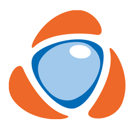

Joseph
CHATAIGNON
CHATAIGNON
22 ans
Taipei, Taïwan
français


Programmes
Recherche
Mon parcours
-
Appier — Taipei, Taïwan
沛星互動科技 — 臺北 , 台灣
2020-2022
Après mon premier séjour à Taïwan, j'ai voulu y retourner. J'ai donc trouvé un emploi comme ingénieur logiciel auprès d'Appier, une entreprise taïwanaise qui utilise le Machine Learning pour assister ses clients dans leurs campagnes publicitaires.

Université Nationale Chiao Tung — Hsinchu, Taïwan
國立交通大學 — 新竹 , 台灣
2018-2019
Désirant depuis longtemps partir étudier à l'étranger, j'ai pu le faire pour une durée d'un an, en commençant par un semestre d'échange académique à l'Université Chiao Tung. J'ai ensuite enchaîné avec un stage de recherche de 6 mois dans le laboratoire de Théorie de l'Information de cette même université, qui a débouché sur la publication de deux papiers à des conférences.
L'Université Nationale Chiao Tung est une université publique taïwanaise à la pointe de la recherche universitaire, située à Hsinchu, Taïwan. Fondée en 1896 à Shanghai par un édit impérial de l'Empereur Guangxu, elle a été rétablie à Hsinchu par d'anciens élèves et professeurs en 1958. Elle est la troisième université du pays, et se situe dans le top 50 des meilleures universités mondiales pour l'ingénierie et l'informatique d'après le classement de Shanghai.-
Université Jean Monnet — Saint-Étienne, France
Université Jean Monnet — Saint-Étienne, France
2018
Lors de l'été 2018, j'ai effectué un stage de 2 mois au pôle musicologie du CIEREC. Le CIEREC est un laboratoire de l'Université Jean Monnet consacré à l'étude de diverses formes d'art.
Mon rôle lors de ce stage était de créer une interface facilitant l'accès et l'analyse d'extraits musicaux, dans le cadre d'un projet visant à définir une méthode pour déterminer une distance entre deux morceaux de musique. 
Télécom Saint-Étienne — Saint-Étienne, France
Télécom Saint-Étienne — Saint-Étienne, France
2016-2019
Ayant passé les concours à l'issue de ma prépa, j'ai intégré l'école d'ingénieurs Télécom Saint-Étienne. C'est à cette occasion que j'ai pu accélérer mon apprentissage de l'informatique sous ses divers aspects. J'y ai aussi eu, par le biais d'un stage et de conversations avec des professeurs, un premier contact avec la recherche universitaire.
Télécom Saint-Étienne est une école d'ingénieurs située dans la ville de Saint-Étienne, en France. Créée en 1991 par l'Université Jean Monnet, elle est agréée par la Commission des Titres d'Ingénieurs et est une école affiliée de l'Institut Mines-Télécom. L'environnement qu'elle représente pour ses étudiants les met en contact aussi bien avec le monde de l'entreprenariat qu'avec celui de la recherche ou du design.-
Inspire — Saint-Étienne, France
2017-2018
La junior-entreprise de Télécom Saint-Étienne, Inspire, propose aux étudiants de travailler comme consultants pour des clients extérieurs. Pendant un an, j'ai donc travaillé à temps partiel sur un projet de plate-forme web de recrutement.
- 
Ordissimo — Montrouge, France
2017
Lors de ma première année à TSE j'ai effectué un stage d'un mois à Ordissimo en programmation web. Mes tâches consistaient à participer à l'amélioration de la plate-forme destinée aux clients de l'entreprise, ainsi qu'au développement d'une interface de back-office.

Institution Sainte-Marie — Antony, France
Institution Sainte-Marie — Antony, France
2014-2016
Le bac fraîchement obtenu, voulant me diriger vers les sciences, j'ai intégré les classes préparatoires de Sainte-Marie d'Antony. Ayant suivi une filière MPSI-MP (Maths-Physique), j'y ai appris intensivement les mathématiques, et dans une moindre mesure la physique et l'informatique (dans laquelle j'avais déjà acquis de larges connaissances en autodidacte).
L'Institution Sainte-Marie d'Antony, créée en 1897 par des marianistes, est un établissement privé d'enseignement situé à Antony, en banlieue parisienne. Malgré son petit effectif, sa filière MP est classée 37ème parmi les CPGE de France.Les classes préparatoires aux grandes écoles (CPGE) sont des filières d'enseignement supérieur. Hébergées généralement dans des lycées, elles ont pour but de préparer les étudiants aux concours des grandes écoles.
Considérées comme très exigentes et sélectives, la compétitivité des concours auxquels les CPGE emmènent leur étudiants les pousse à exiger de ceux-ci une charge de travail parmi les plus hautes d'Europe.